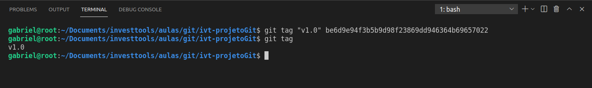
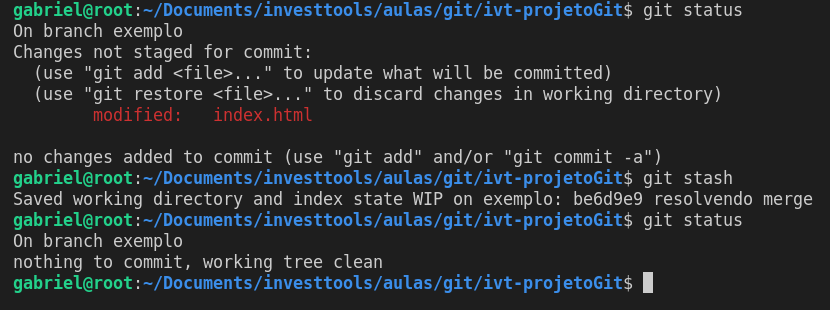

Gabriel Couto
Keicila Marcial
As tags são usadas para marcar pontos importantes no histórico do projeto.
O comando git tag [-comandos (opcional)] "nome-da-tag" [hash do commit (opcional)] possibilita a criação de tags em commits específicos.
O comando git stash "esconde" as alterações do código que não foram commitadas. As alterações são salvas em outro arquivo, sejam elas staged ou unstaged.
É possível exibir os stashs realizados com git stash list ou recuperá-los com git stash pop.
Possível cenário:
Muito Obrigada!